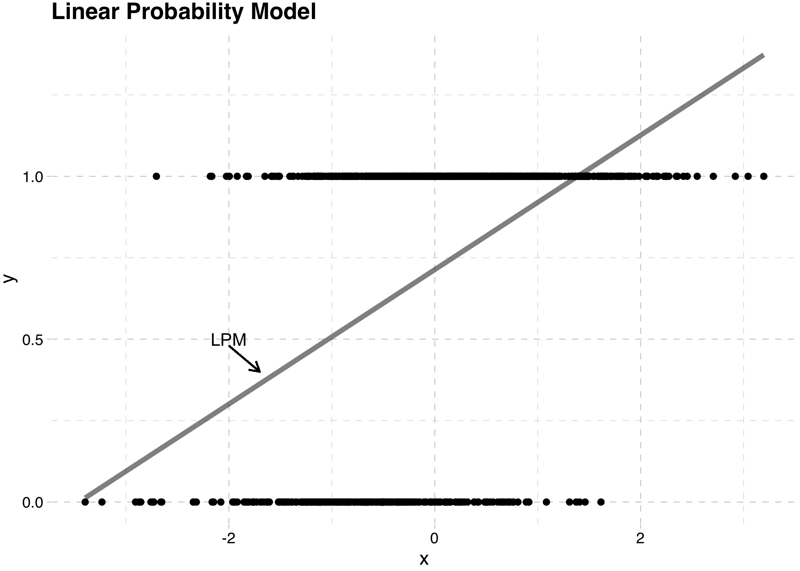
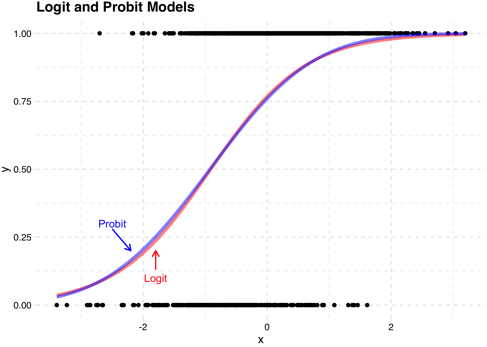
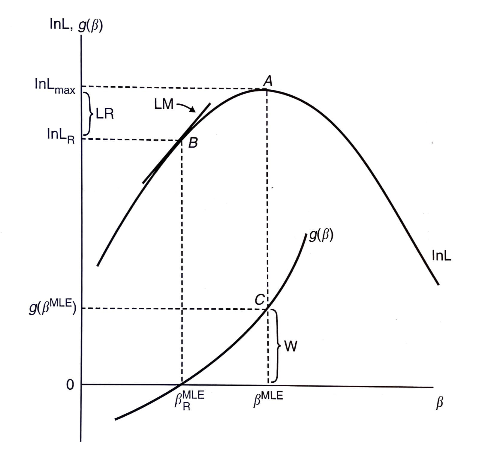

── Attaching core tidyverse packages ──────────────────────── tidyverse 2.0.0 ──
✔ dplyr 1.1.4 ✔ readr 2.1.5
✔ forcats 1.0.0 ✔ stringr 1.5.1
✔ ggplot2 3.5.2 ✔ tibble 3.2.1
✔ lubridate 1.9.4 ✔ tidyr 1.3.1
✔ purrr 1.0.4
── Conflicts ────────────────────────────────────────── tidyverse_conflicts() ──
✖ dplyr::filter() masks stats::filter()
✖ dplyr::lag() masks stats::lag()
ℹ Use the conflicted package (<http://conflicted.r-lib.org/>) to force all conflicts to become errors
Attaching package: 'magrittr'
The following object is masked from 'package:purrr':
set_names
The following object is masked from 'package:tidyr':
extract
Loading required package: carData
Attaching package: 'car'
The following object is masked from 'package:dplyr':
recode
The following object is masked from 'package:purrr':
some
Loading required package: zoo
Attaching package: 'zoo'
The following objects are masked from 'package:base':
as.Date, as.Date.numeric
Loading required package: kableExtra
Attaching package: 'kableExtra'
The following object is masked from 'package:dplyr':
group_rows
Loading required package: survivalLimited Dependent Variables
EC655 - Econometrics
Justin Smith
Wilfrid Laurier University
Fall 2023

Introduction
Introduction
Many economic outcomes are qualitative in nature
Grouped into categories
Work or not
Drive, take bus, cycle to work
Number of visits to Doctor
People sometimes use alternative methods in this context
- Though linear regression does still work in many cases
In this section we cover models for these types of variables
Binary Choice Models
Linear Probability Model
Potential Outcomes
Start with the same potential outcomes setup
\(y_{1}\) is the outcome with treatment
\(y_{0}\) is the outcome without treatment
\(w\) is a binary variable with 1 denoting treatment, and 0 no treatment
We observe \((y, w)\), where
\[y = y_{0} + (y_{1} -y_{0})w\]
- Key difference here is that \(y_{1}\) and \(y_{0}\) are binary
\[y_{0} \in \{0,1\}\] \[y_{1} \in \{0,1\}\]
Linear Probability Model
Regression
- The slope in a regression of \(y\) on \(w\) is
\[E(y|w=1) - E(y|w=0)\] \[= \left [ E(y_{1}|w=1) - E(y_{0}|w=1) \right ] + E(y_{0}|w=1) - E(y_{0}|w=0)\]
First part is ATT, second part is selection bias
Mechanics are the same as when we had continuous outcomes
There is a difference in interpretation
\(y\) is a Bernoulli random variable,
\[E(y|w) = 1 \times Pr(y=1|w) + 0 \times Pr(y=0|w) = Pr(y=1|w)\]
Linear Probability Model
So you can restate the difference in observed means as
\[Pr(y=1|w=1) - Pr(y=1|w=0)\] \[= \left [ Pr(y_{1}=1|w=1) - Pr(y_{0}=1|w=1) \right ] + Pr(y_{0}=1|w=1) - Pr(y_{0}=1|w=0)\]
You can interpret as the difference in response probabilities
Difference in response probabilities is causal effect if
Independence of potential outcomes
Mean independence of potential outcomes
Conditional mean independence of potential outcomes
Linear Probability Model
What the above says is that regression still works when the treatment is binary
Causal effects depend on same assumptions as before
To estimate, use OLS regression of \(y\) on \(w\)
When \(y\) is binary, this is called the Linear Probability Model
Linear Probability Model
Issues with Linear Probability Model
Main problem is predicted probabilities can go outside [0,1] interval
- Some chance of nonesense probabilities
Mainly a problem of predictions
In most economic applications, we care about the slope
- So nonsense predictions are not a big problem
Linear Probability Model
The model exhibits heteroskedasticity
The population least squares regression of \(y\) on \(w\) is
\[y = \beta_{0} + w\beta_{1} + u\]
- The conditional variance of the error is
\[Var[u|w] = Var[y|w] = E[y^2|w] - E[y|w]^2\]
- Since \(y\) is binary, \(y^2 = y\), so
\[Var[y|w] = E[y|w] - E[y|w]^2\]
\[= E[y |w] (1-E[y|w])\]
Linear Probability Model
- Finally \(E[y|w] = Pr(y=1|w)\), so
\[Var[u|w] = Pr(y=1|w) (1-Pr(y=1|w))\]
This means that the variance of the error term is a function of \(w\)
It introduces heteroskedasticity into the model
Solution: use heteroskedasticity robust standard errors
Linear Probability Model

Nonlinear Models
Background
In some cases we may want to fix the predicted probability issue
- If you are doing prediction, for example
One way to do this is to feed the model through a CDF
This is often motivated with an index model
Suppose we model some latent variable \(y^*\) as
\[y^* = \beta_{0} + \beta_{1}w + e\]
- It is some underlying continuous outcome driving our decisions
Nonlinear Models
Issue is we do not observe \(y^*\)
Instead, we observe the binary \(y\) where
\[y = 1\{y^*>0\}\]
- Plugging the model into this
\[y = 1\{\beta_{0} + \beta_{1}w +e>0\}\]
- The probability that \(y=1\) is therefore
\[Pr(y=1|w) = Pr(\beta_{0} + \beta_{1}w +e>0 |w)\]
Nonlinear Models
- The random component is \(e\), so rearrange to isolate it
\[Pr(y=1|w) = Pr(e > -\beta_{0} - \beta_{1}w |w)\] \[ =1 - F(-\beta_{0} - \beta_{1}w)\] \[ =F(\beta_{0} + \beta_{1}w)\]
\(F()\) is the probability distribution of \(e\)
- \(1 - F(-\beta_{0} - \beta_{1}w) = F(\beta_{0} + \beta_{1}w)\) because \(F()\) is symmetric
The probability that \(y\) equals 1 depends on
Treatment status \(w\)
The distribution of \(e\)
Different choices for \(F()\) distribution lead to different models
Nonlinear Models
Probit Model
- Assuming \(e \sim \mathcal{N}(0,\sigma^{2}_{e})\) leads to the Probit Model
\[Pr(y=1|w) = \Phi \left(\frac{\beta_{0} + \beta_{1}w}{\sigma^{2}_{e}} \right)\]
- where
\[\Phi (z) = \int_{-\infty}^{z} \frac{1}{\sqrt{2\pi}} e^{\frac{-v^2}{2}}\,dv\]
Because \(\Phi(.)\) is a CDF, \(Pr(y=1|w)\) is always between 0 and 1
- This solves the predicted probability problem
Nonlinear Models
- The difference in probabilities between treatment and control is
\[Pr(y=1|w = 1) - Pr(y=1|w=0)\] \[= \Phi \left(\frac{\beta_{0} + \beta_{1}}{\sigma^{2}_{e}} \right) - \Phi \left(\frac{\beta_{0}}{\sigma^{2}_{e}} \right)\]
Notice that \(\beta_{1}\) does not equal the difference in response probabilities
They are the slopes in the index model
The index model parameters are not usually of interest
To get the difference in response probabilities, feed parameters into the CDF first
In nonlinear models, parameters are not “marginal effects”
- You need to separately compute them after estimating the model
Nonlinear Models
- In models with more variables and where they are continuous
\[Pr(y=1|\mathbf{x}) = \Phi \left(\frac{\mathbf{x}\boldsymbol{\beta}}{\sigma^{2}_{e}} \right)\]
- The marginal effect for continuous variable \(x_{j}\)
\[\frac{\partial Pr(y=1|\mathbf{x})}{\partial x_{j}} = \phi \left(\frac{\mathbf{x}\boldsymbol{\beta}}{\sigma^{2}_{e}} \right) \frac{\beta_{j}}{\sigma^{2}_{e}}\]
This is a function of the entire vector \(\mathbf{x}\)
You need to specify their values to get the marginal effect
Normally people hold them at the mean
In theory you can get a distribution of marginal effects
Nonlinear Models
Logit Model
- Assuming \(e \sim \text{Logistic}(0,\sigma^{2}_{e})\) leads to the Logit Model
\[Pr(y=1|w) = \Lambda \left(\frac{\beta_{0} + \beta_{1}w}{\sigma^{2}_{e}} \right)\]
where
\[\Lambda (z) = \frac{e^z}{1+e^z}\]
Again, because \(\Lambda(.)\) is a CDF, \(Pr(y=1|w)\) is always between 0 and 1
Nonlinear Models
- The observed difference in probabilities is
\[Pr(y=1|w = 1) - Pr(y=1|w=0)\] \[= \Lambda \left(\frac{\beta_{0} + \beta_{1}}{\sigma^{2}_{e}} \right) - \Lambda \left(\frac{\beta_{0}}{\sigma^{2}_{e}} \right)\]
- In models with more variables and where they are continuous
\[Pr(y=1|\mathbf{x}) = \Lambda \left(\frac{\mathbf{x}\boldsymbol{\beta}}{\sigma^{2}_{e}} \right)\]
Nonlinear Models
- The marginal effect for continuous variable \(x_{j}\)
\[\frac{\partial Pr(y=1|\mathbf{x})}{\partial x_{j}} = \Lambda \left(\frac{\mathbf{x}\boldsymbol{\beta}}{\sigma^{2}_{e}} \right) \left( 1-\Lambda \left(\frac{\mathbf{x}\boldsymbol{\beta}}{\sigma^{2}_{e}} \right) \right)\frac{\beta_{j}}{\sigma^{2}_{e}}\]
- Again, this is a function of the full set of variables
Nonlinear Models
Estimation of Probit and Logit
Both models usually estimated by Maximum Likelihood
Method maximizes the probability of getting our sample by choosing parameters
- TheLikelihood Function is the function of the parameters given the data
The probability distribution of \(y_i\) is
\[f(y_i| \mathbf{x_{i}};\boldsymbol{\beta})= F \left(\frac{\mathbf{x_{i}}\boldsymbol{\beta}}{\sigma^{2}_{e}} \right)^{y_i} \left(1- F \left(\frac{\mathbf{x_{i}}\boldsymbol{\beta}}{\sigma^{2}_{e}} \right) \right) ^{1-y_{i}}\]
Nonlinear Models
- The joint probability of observing the all the \(y_{i}\) in the data is
\[f(\mathbf{y}| \mathbf{X};\boldsymbol{\beta})=\Pi_{i=1}^n F \left(\frac{\mathbf{x_{i}}\boldsymbol{\beta}}{\sigma^{2}_{e}} \right)^{y_{i}} \left(1- F \left(\frac{\mathbf{x_{i}}\boldsymbol{\beta}}{\sigma^{2}_{e}} \right) \right) ^{1-y_{i}}\]
- The Likelihood Function recasts as a function of the parameters given the data
\[\mathcal{L}(\boldsymbol{\beta}|\mathbf{y}, \mathbf{X})=\Pi_{i=1}^n F \left(\frac{\mathbf{x_{i}}\boldsymbol{\beta}}{\sigma^{2}_{e}} \right)^{y_{i}} \left(1- F \left(\frac{\mathbf{x_{i}}\boldsymbol{\beta}}{\sigma^{2}_{e}} \right) \right) ^{1-y_{i}}\]
Nonlinear Models
Both models usually estimated by Maximum Likelihood
Method maximizes the joint probability of \(y\) values conditional on \(\mathbf{x}\)
- This is called the Likelihood Function
In the case of a binary \(y\), the likelihood function is
\[f[y| \mathbf{x};\boldsymbol{\beta}]=P[Y_{1} = y_{1}, Y_{2} = y_{2}, \ldots, Y_{n} = y_{n}|\mathbf{x_{i}};\boldsymbol{\beta}]\] \[=\Pi_{y_{i}=1}F \left(\frac{\mathbf{x_{i}}\boldsymbol{\beta}}{\sigma^{2}_{e}} \right) \Pi_{y_{i}=0} \left[1-F \left(\frac{\mathbf{x_{i}}\boldsymbol{\beta}}{\sigma^{2}_{e}} \right) \right]\] \[=\Pi_{i=1}^{n} F \left(\frac{\mathbf{x_{i}}\boldsymbol{\beta}}{\sigma^{2}_{e}} \right)^{y_{i}} \left[1-F \left(\frac{\mathbf{x_{i}}\boldsymbol{\beta}}{\sigma^{2}_{e}} \right)\right] ^{1-y_{i}}\]
Nonlinear Models
Researchers usually focus on the log of the likelihood instead
It is a monotonic (increasing) transformation of the likelihood
The same parameter vector solves both versions
Log likelihoods are easier to work with
Log Likelihood \[ln\mathcal{L}(\boldsymbol{\beta}|\mathbf{y}, \mathbf{X})= \sum_{i=1}^{N}\{ y_{i}lnF \left(\frac{\mathbf{x_{i}}\boldsymbol{\beta}}{\sigma^{2}_{e}} \right)+ (1-y_{i})ln (1-F \left(\frac{\mathbf{x_{i}}\boldsymbol{\beta}}{\sigma^{2}_{e}} \right)) \}\]
To solve this equation, you need numerical methods
- A grid search algorithm that finds the maximum value
Nonlinear Models
In ML environments, the estimated variance of \(\boldsymbol{\hat{\beta}}\) is estimated as the negative of the expected value of the Hessian (information matrix) \[\hat{Var}(\boldsymbol{\hat{\beta}}) = -E[(\frac{\partial^2 lnL}{\partial\boldsymbol{\hat{\beta}} \partial \boldsymbol{\hat{\beta}^{'}}})^{-1}]\] \[= (\sum_{i=1}^{n} \frac{f(\mathbf{x_{i}^{'}}\boldsymbol{\hat{\beta}})^2 }{ F(\mathbf{x_{i}^{'}}\boldsymbol{\hat{\beta}})(1- F(\mathbf{x_{i}^{'}}\boldsymbol{\hat{\beta}}) ) } \mathbf{x_{i}x_{i}^{'}} )^{-1}\]
where \(F(.)\) is either the Normal or Logistic CDF, and \(f(.)\) is the associated PDF
Nonlinear Models

Nonlinear Models
Hypothesis Testing in Probit and Logit
Simple tests for coefficient significance is done by the usual \(t\)-test method
Assume \(\boldsymbol{\hat{\beta}}\) has normal distribution (asymptotically)
Test statistic \(Z = \frac{\hat{\beta}_{k}}{\hat{SE}(\hat{\beta}_{k})}\)
Nonlinear Models
More complicated tests done using one of 3 methods:
Likelihood Ratio (LR) Test
Test statistic \(LR = 2[ln\hat{L}_{U} - ln\hat{L}_{R}]\)
\(ln\hat{L}_{R}\) is log likelihood evaluated at restricted parameter vector
Wald (W) Test
Test statistic \(W = \hat{g}^{'}[\hat{G}\hat{Var}(\boldsymbol{\hat{\beta}})\hat{G}^{'}]\hat{g}\)
\(\hat{g}\) is a vector of restrictions evaluated at \(\boldsymbol{\hat{\beta}}\)
\(\hat{G}\) is the derivative of a vector of restrictions evaluated at \(\boldsymbol{\hat{\beta}}\)
Lagrange Multiplier (LM) Test
Test statistic \(LM = \hat{d}^{'}[\hat{Var}(\boldsymbol{\hat{\beta}})]\hat{d}\)
\(\hat{d}\) is the derivative of \(lnL\) evaluated at restricted \(\boldsymbol{\hat{\beta}}\)
Restrictions can be linear or non-linear
Nonlinear Models

Nonlinear Models
Goodness of Fit in Probit and Logit
Confusion Matrix
Actual Predicted 0 1 Total 0 # Correct 0 # Incorrect 1 # Pred 0 1 # Incorrect 0 #Correct 1 # Pred 1 Total # True 0 # True 1 Pseudo-\(R^{2}\)
McFadden \(\rightarrow\) \(R^{2} = 1 - \frac{ln\hat{L}_{U}}{ln\hat{L}_{0}}\)
- \(ln\hat{L}_{0}\) is log-likelihood with no explanatory variables
Others are possible, but goodness of fit is not incredibly important
Limited Dependent Variables
Introduction
Arises when a continuous dependent variable is limited in its range
Censoring
- Income is top-coded at some level for privacy
Corner Solutions
- Spending on consumer durables limited below by 0
Incidental Truncation
- Wage is not observed for people who do not work
You can sometimes use OLS depending on context
We will cover models for censoring and corner solutions
Tobit Model
Latent Variable
- We again appeal to a latent variable model
\[y^{*} = \beta_{0} + \beta_{1}w + e\]
- Suppose the observed \(y\) is
\[y = max \{ 0,y^* \}\]
This would be the case for things like consumer purchases
You spend zero or some positive amount
It is naturally bounded below by zero
Tobit Model
- Because it is either zero or positive, the expected value of \(y\) is
\[E[y|w] = E[y|y>0,w]Pr[y>0|w]\]
- Taking the difference in the observed \(y\), we get
\[E[y|w = 1] - E[y|w = 0]\] \[= E[y|y>0,w=1]Pr[y>0|w=1] - E[y|y>0,w=0]Pr[y>0|w=0]\] \[=(Pr[y>0|w=1]-Pr[y>0|w=1]) E[y|y>0,w = 1]\] \[+ (E[y|y>0,w = 1] - E[y|y>0,w = 0]) Pr[y>0|w=0]\]
Tobit Model
There are two key pieces
Participation effect
Conditional on Positive effect
In terms of potential outcomes
\[E[y|w = 1] - E[y|w = 0]\] \[= E[y_1|w = 1] - E[y_0|w = 0]\] \[= E[y_1|w = 1] - E[y_0|w = 1] + E[y_0|w = 1] - E[y_0|w = 0]\]
The limited dependent variable does not change causal interpretation
- As long as potential outcome \(y_{0}\) is mean independent of treatment
Tobit Model
Conditional on Positive
In some contexts people run regressions with just the positive outcomes
- If you wanted to analyze participation decision separately
Difference in observed \(y\) for this group is biased if under random assignment
\[E[y|y>0,w = 1] - E[y|y>0, w = 0]\] \[= E[y_1|y_1>0] - E[y_0|y_0>0]\] \[= E[y_1|y_1>0] - E[y_0|y_1>0] + E[y_0|y_1>0] -E[y_0|y_0>0]\]
The treatment changes who has positive values of potential outcomes
- More subtle form of bias
You cannot interpret conditional on positive effects as causal
Tobit Model
Model
This model is used in the context of censoring and corner solutions
We have data on a random sample
The outcome is limited in its range
There is a mass of observations at 1 or more values
Usually zeroes
Sometimes some upper amount, like income
Using OLS may be a bad strategy depending on your goals
- Can produce predicted values outside the limited range
Tobit Model
- The Tobit model starts with the latent variable model
\[y^{*} = \mathbf{x}\boldsymbol{\beta} + e, \text{ where } e \sim N(0,\sigma^2_{e})\] \[y = \text{max}(0,y^{*})\]
The conditional expectation of interest depends on context
Censored data
\(E[y^{*}|\mathbf{x}]\)
\(y^{*}\) usually has meaning when data are censored
Corner Solutions
\(E[y|\mathbf{x}]\) and \(E[y|y>0, \mathbf{x}]\)
\(y_{i}^{*}\) usually has no meaning for corner solutions
This is the most common situation
Tobit Model
Estimation
Estimate this model by maximum likelihood
The likelihood function has two pieces
When \(y_{i} = 0\)
\[Pr(y_{i} = 0| \mathbf{x}) = Pr(y_{i}^{*}<0 |\mathbf{x})\] \[= Pr(\mathbf{x}\boldsymbol{\beta} +e<0 |\mathbf{x})\]
Tobit Model
- Due to symmetry in the distribution of \(e\)
\[= Pr(e>\mathbf{x}\boldsymbol{\beta} |\mathbf{x})\] \[= Pr(\frac{e}{\sigma_{e}}>\frac{\mathbf{x}\boldsymbol{\beta}}{\sigma_{e}} |\mathbf{x})\]
\[= 1-\Phi\left ( \frac{\mathbf{x}\boldsymbol{\beta}}{\sigma_{e}} \right)\]
Tobit Model
- When \(y_{i} > 0\)
\[f(y_{i} | y_{i}>0, \mathbf{x}) = \frac{1}{\sigma_{e}} \phi \left ( \frac{ y_{i} - \mathbf{x}\boldsymbol{\beta}}{\sigma_{e}} \right )\]
- Combining terms, we can form the likelihood function
\[\mathcal{L}(\boldsymbol{\beta}|\mathbf{y}, \mathbf{X}) =\Pi_{y_{i}=0} \left(1-\Phi\left ( \frac{\mathbf{x}\boldsymbol{\beta}}{\sigma_{e}} \right) \right ) \Pi_{y_{i}>0} \left( \frac{1}{\sigma_{e}} \phi \left ( \frac{ y_{i} - \mathbf{x}\boldsymbol{\beta}}{\sigma_{e}} \right ) \right)\]
Tobit Model
- The log likelihood is
\[ln\mathcal{L}(\boldsymbol{\beta}|\mathbf{y}, \mathbf{X}) =\sum_{y_{i}=0} ln \left(1-\Phi\left ( \frac{\mathbf{x}\boldsymbol{\beta}}{\sigma_{e}} \right) \right ) + \sum_{y_{i}>0} ln\left( \frac{1}{\sigma_{e}} \phi \left ( \frac{ y_{i} - \mathbf{x}\boldsymbol{\beta}}{\sigma_{e}} \right ) \right)\]
- Maximize this function by choosing the parameter vector \(\boldsymbol{\beta}\) and \(\sigma_{e}\)
Tobit Model
Marginal effects will depend on the context of our estimation
Censored data \[\frac{\partial E[y^{*}|\mathbf{x}]}{\partial x_{k}} = \beta_{k}\]
- In a Tobit with censored data, you can interpret the slope directly
Corner Solutions
\(\frac{\partial E[y|\mathbf{x}]}{\partial x_{k}} = \Phi(\frac{ \mathbf{x}\boldsymbol{\beta} }{\sigma})\beta_{k}\)
\(\frac{\partial E[y| y>0,\mathbf{x}]}{\partial x_{k}} = \{1-\lambda(\frac{ \mathbf{x}\boldsymbol{\beta} }{\sigma})[\frac{ \mathbf{x}\boldsymbol{\beta} }{\sigma} + \lambda(\frac{ \mathbf{x}\boldsymbol{\beta} }{\sigma})] \}\beta_{k}\)
With corner solutions it depends on what you want
You may want slope for random person, or conditional on \(y>0\)
Tobit Model
Issues with Tobit Model
It must be possible for the dependent variable to take values near the limit
Example: not the case with consumer durables
You either spend zero or a large amount
Intensive and Extensive margins have same parameters
Means the model is relatively inflexible
Can be solved by modelling each separately
Normality assumption
Care must be taken in interpreting the coefficients
- Do we care about the effect of \(x_{k}\) on \(y\) or \(y^{*}\)?